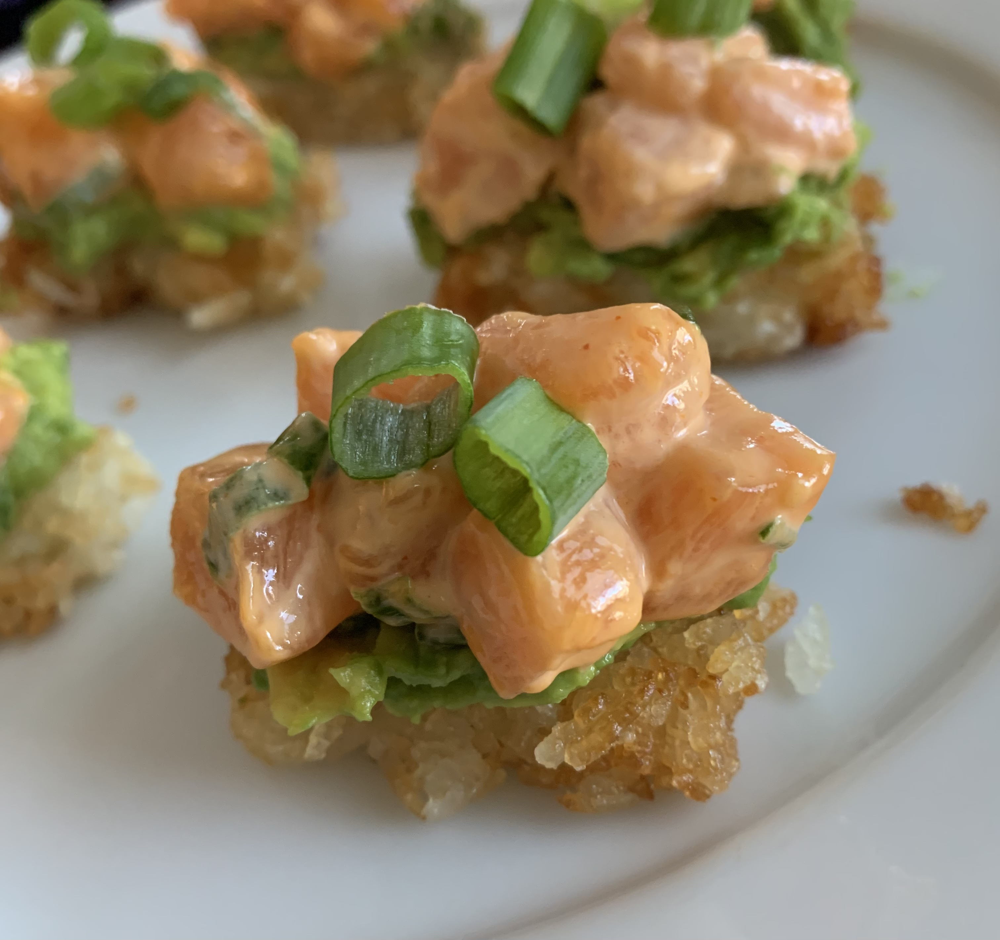

salmon crispy rice
serves: 2
meg's rating: 12/10 #bussin'
honestly im making this shit up as i go...i measure with love lmao

ingredients:
- sushi grade salmon/sashimi
- kewpie mayo
- siracha
- avocado
- white rice, cooked
- green onion
- rice wine vinegar
- granulated sugar
- salt
- masago, optional
directions!
- mix together cooked rice, rice wine vinegar, sugar and salt
- put plastic wrap in a square tupperware and flatten rice on top of it
- let chill in the fridge for at least an hour
- once firm, cut into small rectangles and fry in oil until golden or crispy
- cut salmon and mix in 2:1 ratio of kewpie mayo to siracha (w)ill become a light orange color) and mix in handful of green onion
- cut avocado and smush it in a bowl
- to assemble, layer rice, then avocado, and lastly the salmon
- top with scallions and enjoy!
fuck it uppppp